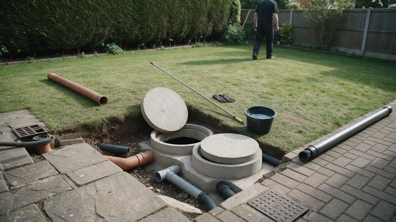

What we do here
Plenty of properties off the main sewer have a septic tank or a cesspit, and most of the calls we get about them are not really about the tank at all. They are about the pipework: the run from the house that has blocked, the chamber before the tank that has silted up, the outlet that has become choked with roots, or the drainage field that has stopped taking water.
That is all our work. Clearing it, camera surveying it, and repairing or relining the pipe runs is the same job as on any other drain.
What we do not do
We do not empty tanks. Emptying a septic tank or a cesspit, and taking the contents away, needs a licensed tanker operator, and that is who you want to ring for it. We will tell you that rather than find a way to be useful.
We also will not advise you on what you are allowed to discharge, or whether your system meets the current rules. There are national rules covering that and they have changed in recent years. If your tank discharges to a watercourse, or you are selling and somebody has asked questions about it, that is a conversation with the Environment Agency and a specialist, not with us.
Signs the drainage side is the problem
A tank that needs emptying far more often than it used to is a classic sign that something else is wrong, because if ground water is getting in through a cracked run, the tanker is taking away rainwater. Wet ground over the drainage field, a smell when there did not use to be one, and the downstairs toilet being slow are all worth a camera before they are worth a tanker.
Buying a house with one
Worth looking at properly. We can survey the pipe runs and the chambers and tell you what condition they are in, which is a useful half of the picture. The other half, the tank and its discharge, wants somebody who does that specifically. Between the two of you, you will know what you are buying.

Generated photoGenerated for this demo. Not a photograph of a real job.
On the day
How this one usually goes.
- Find out what is actually thereTank or cesspit, where the runs go, how many chambers there are, and where the outlet ends up. A lot of this is not written down anywhere.
- Lift the chambers on the runThe chamber before the tank tells you most. Full and the blockage is upstream of the tank, not in it.
- Clear the pipeworkRods and the jet on the runs in and out, the same as any other drain.
- Camera the runsCracks letting ground water in are why some tanks need emptying twice as often as they should.
- Tell you which bit is somebody else'sEmptying, discharge rules and the tank itself. We will name what we do not cover rather than have a go at it.
A sample running order for this demo. Yours depends on what is under the covers.
Questions
Asked about this job.
My tank needs emptying much more often than it used to. Why?
Often because something that should not be going in is going in. The commonest cause is ground or rainwater getting into a cracked run or a bad joint, so the tanker is being paid to take away rain.
A camera along the runs is the cheap way to find out, and it tends to pay for itself in tanker visits if that turns out to be it.
Can you empty it while you are here?
No. Emptying needs a licensed tanker operator who can take the contents away legally, and that is not us.
What we can do is the pipework, the chambers and the camera work, which is usually where the actual fault is. We would rather tell you to ring a tanker firm than pretend otherwise.
The ground over the drainage field is wet. Is that the drains?
It can be the pipework and it can be the field itself. A blocked or collapsed run feeding it, a distribution chamber that has silted up, or a field that has reached the end of its life all look much the same from the lawn.
We can clear and survey the pipework and tell you what we find. If the field itself has had it, that is specialist work and you want somebody who does it.
Do you deal with the rules about discharge?
No, and be wary of anybody who says they do in passing. The rules on what a septic tank may discharge to, and what has to be upgraded, are national and they have changed.
If that is your question, the Environment Agency and a specialist are where to start. We will stick to the drains and tell you honestly where our bit stops.
General trade knowledge written for this demo, not advice on your drain.
Our work
Sample jobs like this.
 Generated photoHow it should lookPrescot · sample
Generated photoHow it should lookPrescot · sample Generated photoCamera before anything elseSt Helens · sample
Generated photoCamera before anything elseSt Helens · sample Generated photoWhen it has to come upMaghull · sample
Generated photoWhen it has to come upMaghull · sampleMade up samples with generated pictures. Tap one for the detail.
Also
The other things we do.
Blocked drains and toilets
Rodded, jetted and running again, then a look down it to see what caused it. Most of what we pull out is wipes, fat or roots.
More →Drain camera surveys
A camera down the run so you can see the inside of the pipe instead of guessing. Footage and a plain written report after.
More →Drain repairs and relining
Cracks, open joints and roots put right from inside the pipe where we can, with a patch or a liner cured in place.
More →Soakaways and land drainage
Rainwater taken away from the house and the lawn. We test what the ground actually does before anybody prices the dig.
More →Gully and gutter outlet clearing
The silt out of the gully pot and the outlet flushed through, so the downpipe stops running down the wall.
More →Shall we come and look?
Tell us what it is doing and your postcode and we will book someone in. If waste water is coming up now, use the urgent line instead.